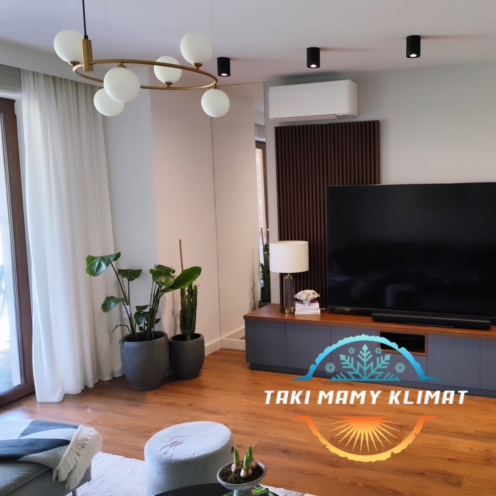
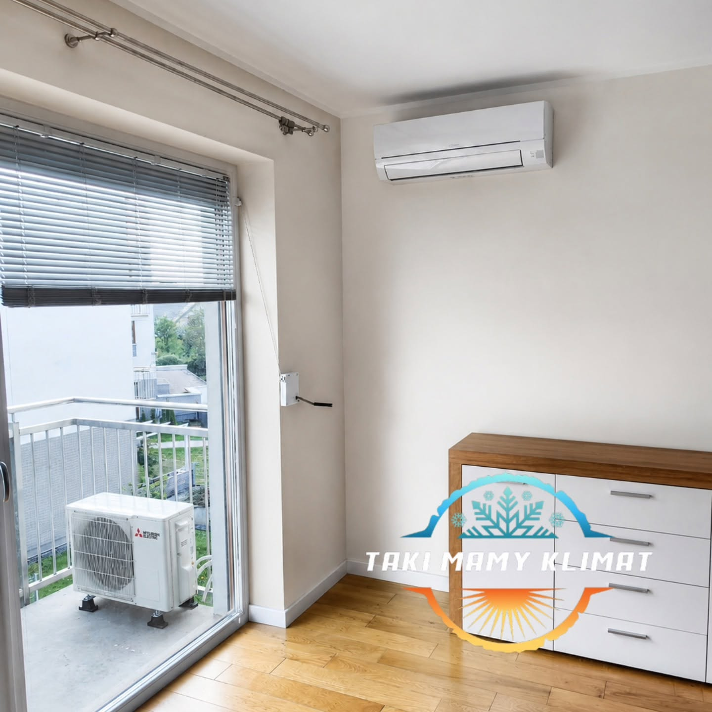
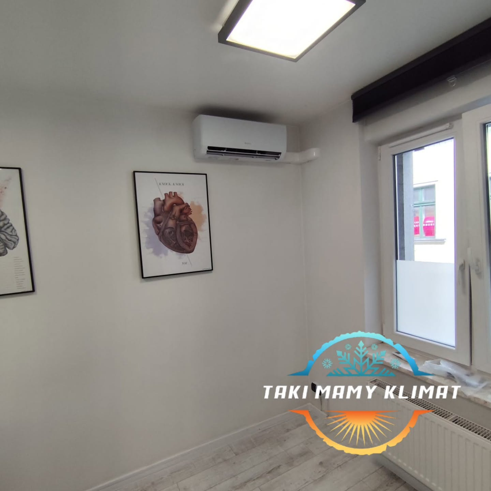
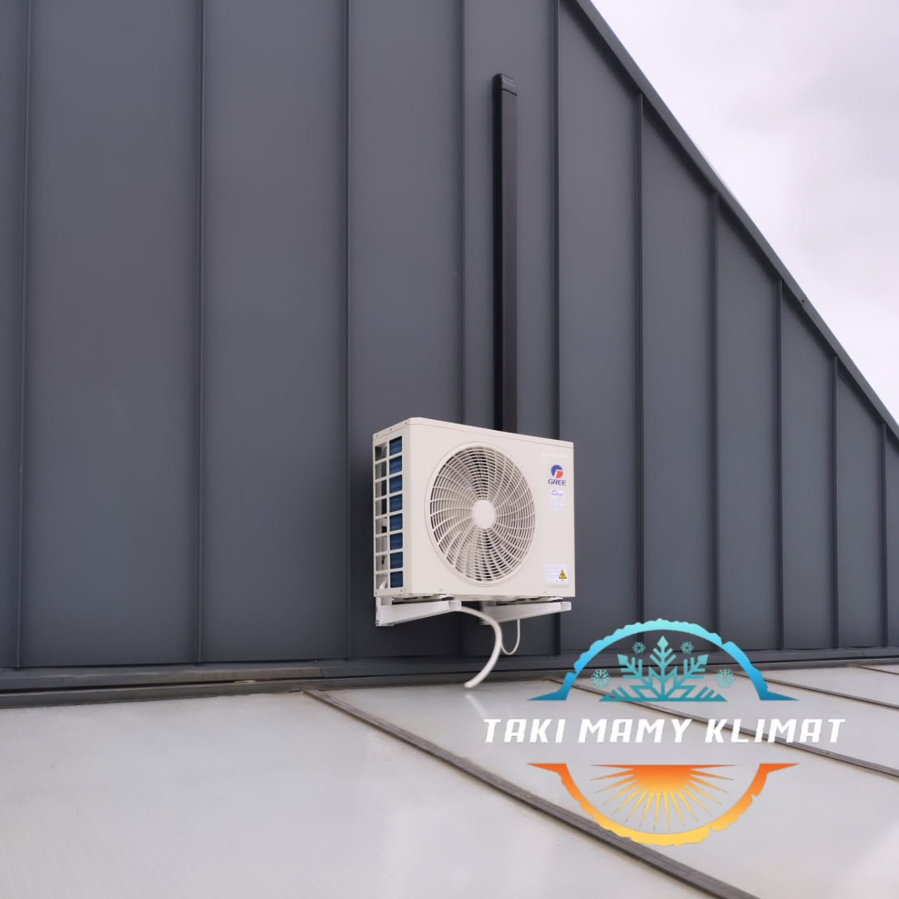

KLIMATYZACJA • MONTAŻ • SERWISChłód, kiedy trzeba.
Chłód, kiedy trzeba.
Ciepło, kiedy chcesz.
Profesjonalny montaż i serwis klimatyzacji w Krakowie i okolicach. Fachowo, terminowo i czysto — od doboru urządzenia po uruchomienie.
MONTAŻ ✦ SERWIS ✦ CZYSZCZENIE ✦ NAPRAWA ✦ WENTYLACJA ✦ ODGRZYBIANIE
01 / USŁUGIDobry klimat
Dobry klimat
zaczyna się tutaj.
Kompleksowa opieka nad klimatyzacją — od doboru i montażu po regularny serwis.
KOMPLEKSOWA OBSŁUGATAKI MAMY
KLIMATKraków i okolice
KLIMATKraków i okolice

01
Montaż klimatyzacji
Dobór urządzenia, estetyczny montaż i uruchomienie.

02
Serwis i czyszczenie
Przegląd, czyszczenie, odgrzybianie i kontrola pracy.

03
Naprawa
Diagnostyka usterki i konkretna informacja o kosztach.
04
Wentylacja
Montaż i serwis rozwiązań poprawiających wymianę powietrza.
LOKALNY SPECJALISTATechniczne doświadczenie.
Techniczne doświadczenie.
Ludzkie podejście.
Firmę prowadzi Tomasz Dryndos. Doświadczenie zdobyte przy montażu i serwisie klimatyzacji w Polsce i Norwegii przekłada się na sprawną realizację, jasne doradztwo i odpowiedzialność za efekt.
Fachowy dobór
Rozwiązanie dopasowane do wnętrza, metrażu i sposobu użytkowania.
Czysty montaż
Estetyczne prowadzenie instalacji i porządek po zakończeniu pracy.
Pewny kontakt
Terminowość, konkretna wycena i jasna informacja na każdym etapie.
★★★★★
„Pan życzliwy, kontaktowy, punktualny. Bardzo dziękuję za pomoc.”
★★★★★
„Miły kontakt, serwis klimatyzacji wykonany profesjonalnie.”
★★★★★
„Wszystko terminowo i czysto. Polecam.”
03 / WSPÓŁPRACA
Prościej się nie da.
1Dzwonisz lub piszeszOpowiedz krótko o pomieszczeniu i potrzebach.
2Dobieramy rozwiązanieUstalamy sprzęt, zakres, koszt i termin.
3MontujemySprawnie, bezpiecznie i z dbałością o porządek.
4KorzystaszUruchamiamy urządzenie i wyjaśniamy obsługę.
BEZPŁATNA WYCENAZróbmy dobry klimat
Zróbmy dobry klimat
w Twoim wnętrzu.
Kraków i okolice • pon.–pt. 8:00–17:00
531 766 040